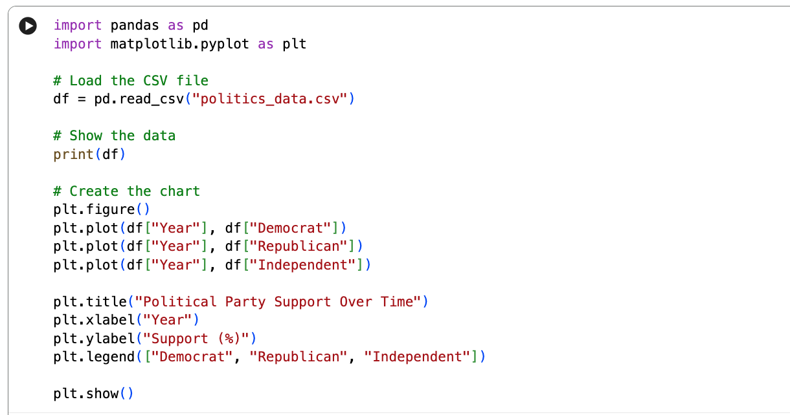
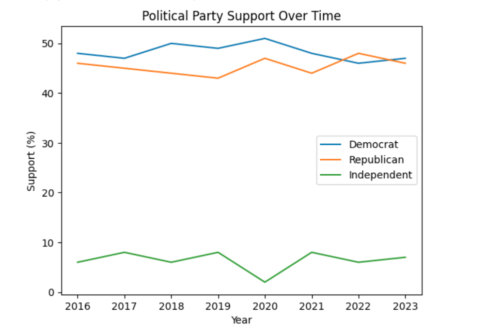
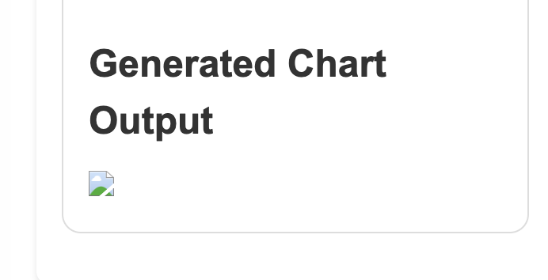
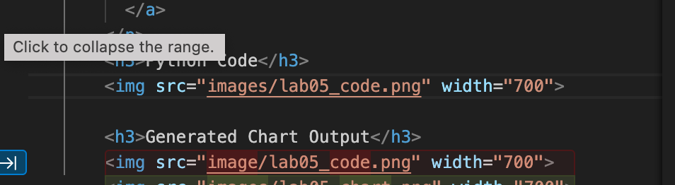
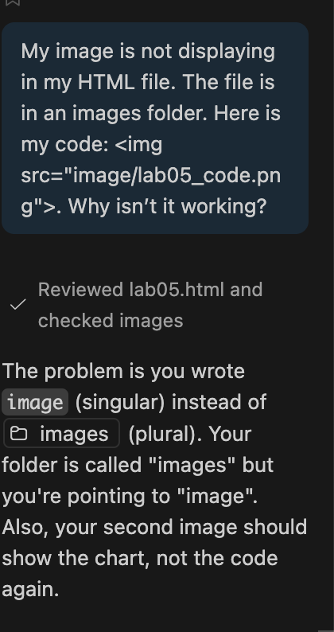

Overview / Lab Requirements
I was excited for Lab 5 because after learning in class how Copilot could help correct parts of my portfolio code, I wanted to see what else it could help me create for my site. Through this lab, I completed three experiments to test how AI could support coding features on my website: a dark mode toggle, a Python CSV visualization, and debugging a broken image path.
- Create and test multiple coding experiments.
- Use AI support while still explaining my own process and decisions.
- Include reflection text, outputs, and screenshots for each experiment.
Visual / Embedded Content
Experiment A: Live Dark Mode Demo
Use the button below to toggle the page theme and see the interface change in real time.
Experiment B: Python Code Generation


Experiment C: Debugging with AI



What I Learned
I learned that these experiments were not as automatic as I expected. AI was helpful, but I had to be intentional and specific in my prompts to get the result I wanted. This lab also changed how I think about AI. I usually have negative connotations because I feel like AI can make people lazy, but in this case it felt more like a tool that helped me create things I would have struggled to build alone.
What This Demonstrates About My Abilities
This lab demonstrates that I can experiment with new tools, ask effective questions, and apply AI support to real coding problems. It also shows that even when I do not fully recognize every line of code, I can still test, interpret results, and use the tool to build creative features in a practical way.
Reflection
I was excited for this lab because seeing how Copilot could help correct code on my portfolio in class made me curious about what else I could build with AI support. Across the three experiments, I realized AI works best when I give clear instructions and keep checking the output instead of expecting it to do everything automatically.
Experiment A: Portfolio Enhancement
The first thing I did was ask AI to create a dark mode toggle feature for Lab 05 on my portfolio. The toggle button inverts the colors on the page to black with white text. I did not immediately understand all of the code AI created, but once I added it to my page, I recognized phrases like classList.toggle("dark"), which helped me understand how the page switches into dark mode. This experiment showed me that if I am very specific with my wording, AI can be really helpful for building features.
Experiment B: Python Code Generation
The next experiment was creating a CSV file and using Python to generate a graph that I could upload to my profile. Honestly, this was the part I understood the least, and I had to let AI do more of the work. I was still able to ask questions effectively, which helped me get the result I wanted, even though a lot of the code it returned was not code I recognized right away. I had to trust and test it, and it was cool to see it come together in the end.
Experiment C: Debugging with AI
The last experiment I explored was intentionally breaking an image path and then asking AI to help fix it. Once I broke the code, I honestly forgot what was missing because code can all start to look the same to me. Having Copilot locate the error and repair it was super helpful, and this is definitely something I can see myself using in the future when I get stuck.
Overall, this lab changed my view of AI. I still think there are downsides in everyday use when people become too reliant on it, but for coding and digital creation it can be a real tool when used properly. Since I enjoy creating things digitally but still struggle with code at times, this lab showed me that AI can help streamline the creative process without replacing my own effort.